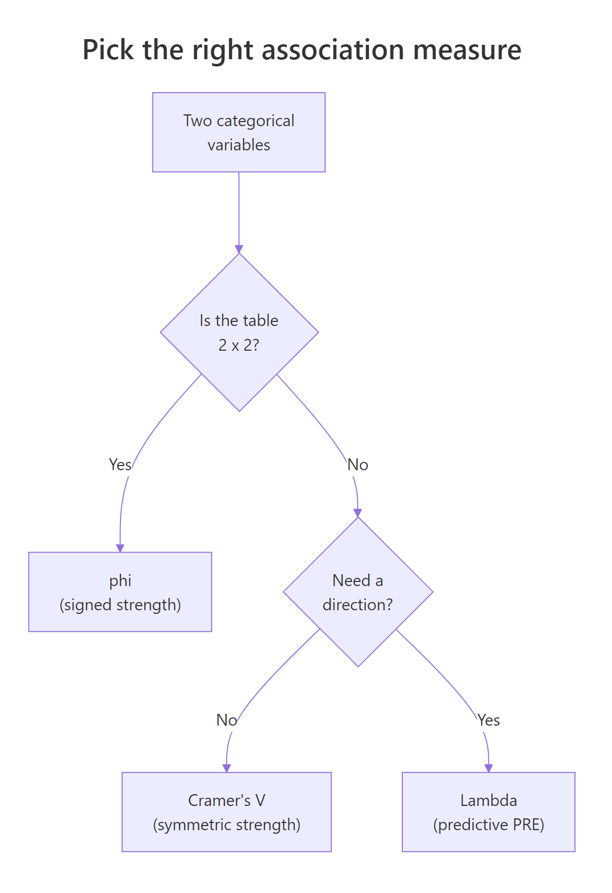
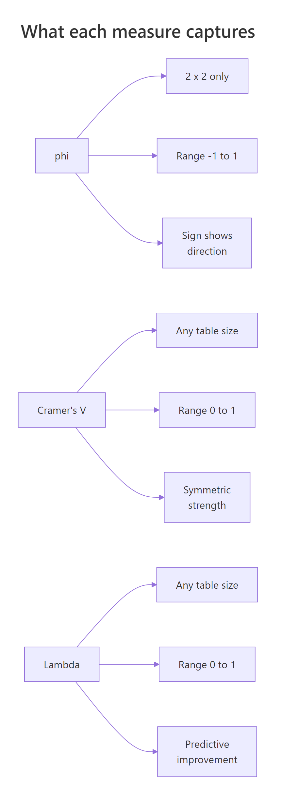

Cramér's V, phi & Lambda in R: Association Measures for Tables
Cramér's V, the phi coefficient, and Goodman-Kruskal's Lambda are the three workhorse measures of association for categorical data. A chi-square test tells you whether two variables are related; these statistics tell you how strongly, and Lambda even tells you how much one helps predict the other.
What do Cramér's V, phi, and Lambda actually measure?
A chi-square test gives a yes/no on independence, but a tiny p-value on a 50,000-row table can sit alongside a near-zero practical effect. To turn that p-value into something an analyst can act on, you compute an association measure on the same contingency table. Let's compute all three on the built-in HairEyeColor data and see what each one says.
Hair colour and eye colour are far from independent (chi-square = 138.3 on 9 df, p < .001), and V = 0.28 says the relationship is moderate, not overwhelming. Phi does not apply here because the table is bigger than 2x2. We will compute Lambda in its own section because it answers a different question entirely: how much does knowing one variable cut your prediction error for the other?
DescTools::CramerV(), rcompanion::cramerV(), or effectsize::cramers_v(). Those packages are not bundled with this interactive runtime, so we build the measures from their formulas, which is also the clearest way to learn what they actually do.Try it: Build a Sex by Hair contingency table from HairEyeColor and compute Cramér's V on it. The matrix should be 2 by 4. Save the result to ex_V.
Click to reveal solution
Explanation: Sex and hair colour are barely related in this dataset, so V drops to about 0.10, well below the 0.28 we saw for hair by eye.
How do you compute Cramér's V from scratch?
Cramér's V rescales the chi-square statistic so that it is comparable across tables of different sizes. The intuition: chi-square grows with sample size and with the number of cells, so a raw value of 138 means very different things on a 2x2 versus a 4x4. V divides chi-square by its theoretical maximum to land on a clean 0-to-1 scale.
The formula is:
$$V = \sqrt{\frac{\chi^2}{n \cdot (\min(r, c) - 1)}}$$
Where:
- $\chi^2$ is the Pearson chi-square statistic from the contingency table
- $n$ is the total number of observations
- $r$ and $c$ are the number of rows and columns
Wrapping this in a function makes it easy to apply to any table. The function takes a matrix or table object and returns a single number.
The function reproduces the 0.279 we computed by hand. Once defined, you can throw any contingency table at it: an income-by-region table, a treatment-by-outcome table, a survey response by demographic group. The shape no longer matters because V already corrects for it.
Try it: Build a 3x4 matrix of fictional counts (your choice), pass it to cramers_v(), and confirm the result is between 0 and 1.
Click to reveal solution
Explanation: Any non-negative integer matrix works. The diagonal-heavy structure produces a fairly strong V around 0.40.
When should you use phi instead of Cramér's V?
The phi coefficient is the original 2x2 association measure, and on a 2x2 table phi and V agree in magnitude. Phi has one extra perk: it carries a sign, so it tells you whether the diagonal is over-represented (positive) or the anti-diagonal is (negative). That direction is meaningful only when both rows and columns have a natural ordering of "this category" vs "that category," like treatment vs control or survived vs died.
For a 2x2 table with cells $a$, $b$, $c$, $d$:
$$\phi = \frac{a d - b c}{\sqrt{(a + b)(c + d)(a + c)(b + d)}}$$
Where $a, b, c, d$ are the four cell counts:
| Col 1 | Col 2 | |
|---|---|---|
| Row 1 | $a$ | $b$ |
| Row 2 | $c$ | $d$ |
Let's apply this to the classic Titanic Sex by Survived table. The built-in Titanic array splits passengers four ways, so we collapse Class and Age first.
Phi comes out to +0.456, a moderately strong association. The positive sign reflects the row and column order we chose: Male is row 1 and "No" (did not survive) is column 1, so the positive sign means males are over-represented in the "did not survive" cell. Flip either dimension and the sign flips with it. The two values match within rounding (the slight gap is from chisq.test() returning the chi-square that cramers_v() then takes a square root of, while phi_2x2() works directly on cell counts).
Try it: Build a 2x2 table for a fictional drug trial with 50 treated and 50 control patients, where the treated group has more recoveries. Compute phi.
Click to reveal solution
Explanation: With Treated as row 1 and Recovered as column 1, the positive 0.30 says the treated group is over-represented in the Recovered cell, which is exactly what we set up.
What does Goodman-Kruskal's Lambda tell you that V doesn't?
V is a strength measure: bigger means stronger relationship. Lambda is a prediction measure: it tells you how much your guess of one variable improves when you already know the other. The technical name is proportional reduction in error (PRE).
Imagine you have to predict everyone's eye colour, with no other information. Your best guess is the modal class: just say "Brown" for everyone. The number of mistakes you make is $E_1$. Now suppose someone whispers each person's hair colour to you before you guess. Within each hair group, you predict that group's modal eye colour. The new error count is $E_2$. Lambda is the share of those original errors you eliminated:
$$\lambda(Y \mid X) = \frac{E_1 - E_2}{E_1}$$
This is asymmetric. Knowing hair colour might help you predict eye colour a lot, while knowing eye colour barely helps you predict hair colour. Lambda exposes that asymmetry.
The asymmetry is striking. Knowing someone's hair colour cuts your eye-colour prediction errors by 23%, but knowing their eye colour cuts your hair-colour prediction errors by only 3%. The symmetric Lambda (about 0.14) averages those two, which is why directional Lambda is almost always more informative than the symmetric one.
Try it: Compute Lambda predicting Sex from Hair using the margin.table(HairEyeColor, c("Hair", "Sex")) table. Then compute Lambda predicting Hair from Sex on the same table. Save them to ex_lam_a and ex_lam_b.
Click to reveal solution
Explanation: Females outnumber males in every hair group, so the modal sex never changes and Lambda for predicting sex is exactly 0. Predicting hair from sex squeezes a tiny improvement (1.5%) because the modal hair colour does shift between male and female.
How do you interpret these effect sizes?
Two questions matter when you read a V, phi, or Lambda value: is this big or small, and does the table size warp the answer?
For magnitude, the field has settled on Cohen-style thresholds. They are conventions, not laws of nature, but they give you a starting vocabulary. The thresholds for V tighten as the table gets bigger because the maximum-possible chi-square also grows.
| Measure | Small | Medium | Large | Notes |
|---|---|---|---|---|
| Phi (2x2) | 0.10 | 0.30 | 0.50 | Same scale as a correlation |
| V (2x2) | 0.10 | 0.30 | 0.50 | Identical to phi for 2x2 |
| V (3x3, df=4) | 0.07 | 0.21 | 0.35 | Cohen's w divided by sqrt(df) |
| V (4x4, df=9) | 0.05 | 0.15 | 0.25 | Smaller thresholds for bigger tables |
| Lambda | 0.00 | 0.10 | 0.30 | Floor at 0; reach 0.30 is unusual |
Use the diagram below as a quick map of which measure to compute when.

Figure 1: A quick decision tree for picking the right association measure.
For warping, V has a known small-sample bias: even random data produce $V > 0$ when $n$ is small relative to the table size. Bergsma (2013) proposed a bias-corrected version that shrinks V toward zero in proportion to the degrees of freedom. The formula and a small implementation:
For HairEyeColor with $n = 592$, the correction barely moves the needle (0.279 to 0.271), because the sample is large relative to the 4x4 grid. On smaller tables you will see a much bigger gap, and the corrected value is the more honest one. The capstone exercises walk through that case.
Try it: Apply cramers_v_bc() to the Sex by Hair table from earlier and compare it to the plain V (about 0.099).
Click to reveal solution
Explanation: The bias correction shaves off a small but visible chunk, suggesting some of the 0.099 was sampling noise. With $n = 592$ over a 2x4 table, the shrinkage is modest.
Practice Exercises
Exercise 1: Bias correction on a sparse 4x4
You have 50 patients cross-classified by symptom group (4 levels) and treatment outcome (4 levels). Compute the plain Cramér's V and the bias-corrected V. By how much does the correction shrink V?
Click to reveal solution
Explanation: With only 50 observations spread over 16 cells, expected counts are tiny. The bias-corrected V drops from 0.527 to 0.480, a 9% relative shrinkage. That is the magnitude of inflation you would have reported by using plain V on data this sparse.
Exercise 2: Direction matters with Lambda
You have a 3x3 table of education level (HS, BA, Grad) by voting choice (D, R, I). Compute Lambda in both directions, then write a one-sentence interpretation of each.
Click to reveal solution
Explanation: D wins inside every education group, so knowing education never changes the vote prediction and Lambda is 0. Going the other way, knowing the vote does shift the modal education choice for at least one column, producing a tiny but non-zero 0.04. This is the canonical illustration of why a Lambda of 0 is not the same as independence.
Complete Example
A marketing team wants to know whether ad channel and conversion outcome are related. They have 2,000 customers cross-classified by Channel (Email, Social, Search, Direct) and Converted (No, Yes). The pipeline below builds the table, runs the chi-square test, computes Cramér's V, and computes Lambda in both directions.
The chi-square test rejects independence handily (chi-square = 102.8 on 3 df, p < .001), and V = 0.23 says the relationship is small-to-medium. Yet $\lambda(\text{Converted} \mid \text{Channel}) = 0$. How can both be true? Because "No" is the modal outcome inside every channel, including Search, even though Search has by far the highest conversion rate (44%). Knowing the channel does not change your best-guess prediction of conversion: it stays at "No." The relationship is real, just not strong enough to flip any modal class. If you reported only Lambda, you would mistakenly conclude there is no useful association, when in fact Search converts at 2.8 times the Social rate, a finding worth acting on.
The takeaway: V and Lambda answer different questions. Use V when you want a single number for "how related are these," and use Lambda when the actual decision is "should I bet differently after seeing $X$?"
Summary
The three measures form a complementary toolkit. Use this comparison to remember which job each one does, and the diagram below as a visual recap.
| Measure | Range | Table size | Direction info | Best for |
|---|---|---|---|---|
| Phi | -1 to 1 | 2x2 only | Sign | Reporting a signed effect on a 2x2 |
| Cramér's V | 0 to 1 | Any | None | Single-number strength of association |
| Cramér's V (bias-corrected) | 0 to 1 | Any | None | Same as V, when n is small |
| Lambda (symmetric) | 0 to 1 | Any | Averaged | Rarely the right choice |
| Lambda (directional) | 0 to 1 | Any | Asymmetric | "Does X help me predict Y?" |

Figure 2: Side-by-side properties of phi, Cramér's V, and Lambda.
Three rules of thumb keep you out of trouble:
- Always pair an effect size with the chi-square test result. The p-value flags an association; V or Lambda quantifies it.
- On any table where $n$ is less than about 5 times the number of cells, report the bias-corrected V instead of plain V.
- A Lambda of 0 is not evidence of independence. Compute V too before drawing conclusions.
References
- Cramér, H. (1946). Mathematical Methods of Statistics. Princeton University Press. The original derivation of V.
- Goodman, L. A., & Kruskal, W. H. (1954). Measures of association for cross classifications. Journal of the American Statistical Association, 49(268), 732-764.
- Bergsma, W. (2013). A bias-correction for Cramér's V and Tschuprow's T. Journal of the Korean Statistical Society, 42(3), 323-328.
- rcompanion handbook, Mangiafico S., Measures of Association for Nominal Variables. Link
- effectsize package vignette, Effect Sizes for Contingency Tables. Link
- DescTools::CramerV reference. Link
- Wikipedia, Cramér's V. Link
Continue Learning
- Chi-Square Test of Independence in R. The parent tutorial that runs the test whose statistic V and Lambda summarise.
- Categorical Data in R. Factors, levels, and how to build the contingency tables that feed these measures.
- Chi-Square Goodness of Fit Test in R. The one-variable cousin of independence testing, with its own effect size (Cohen's w).